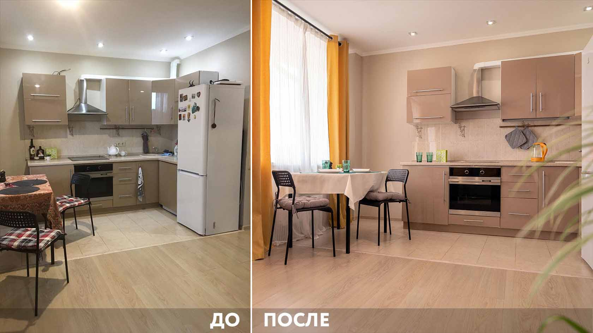

Каждый хочет жить в красивой уютной квартире, даже если она съемная. Правда, понятие о красоте у всех разное. Стоит ли пытаться угодить потенциальному квартиросъёмщику или оставить «бабушкин» ремонт? Ответ неоднозначен, стоит подумать о том, каким вы представляете себе жильца. Если он аккуратен, респектабелен, платит вовремя и не доставляет никаких проблем, таким и должен выглядеть ремонт под сдачу квартиры.
Проанализировали запросы арендаторов и собрали рекомендации, как преобразить старую квартиру с минимальными вложениями. Спойлер: кафель можно красить!

Можно сдавать в краткосрочную аренду собственное жильё, брать недвижимость в долгосрочную аренду и пересдавать посуточно или взять квартиру в управление. В статье рассказываем о каждом из этих методов и разберёмся, как выбрать идеальную квартиру для посуточной аренды, какой сделать ремонт, где и как искать гостей.